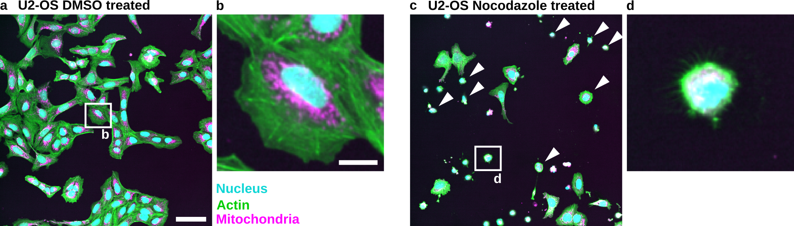
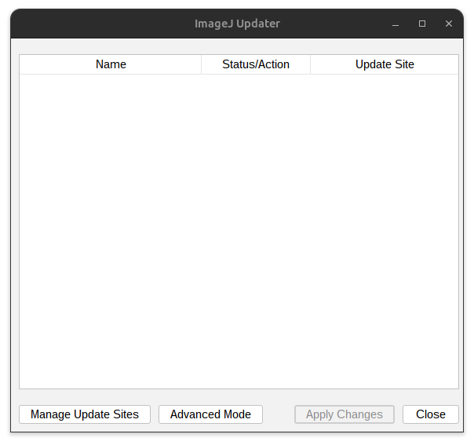
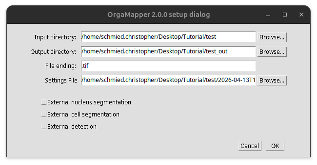
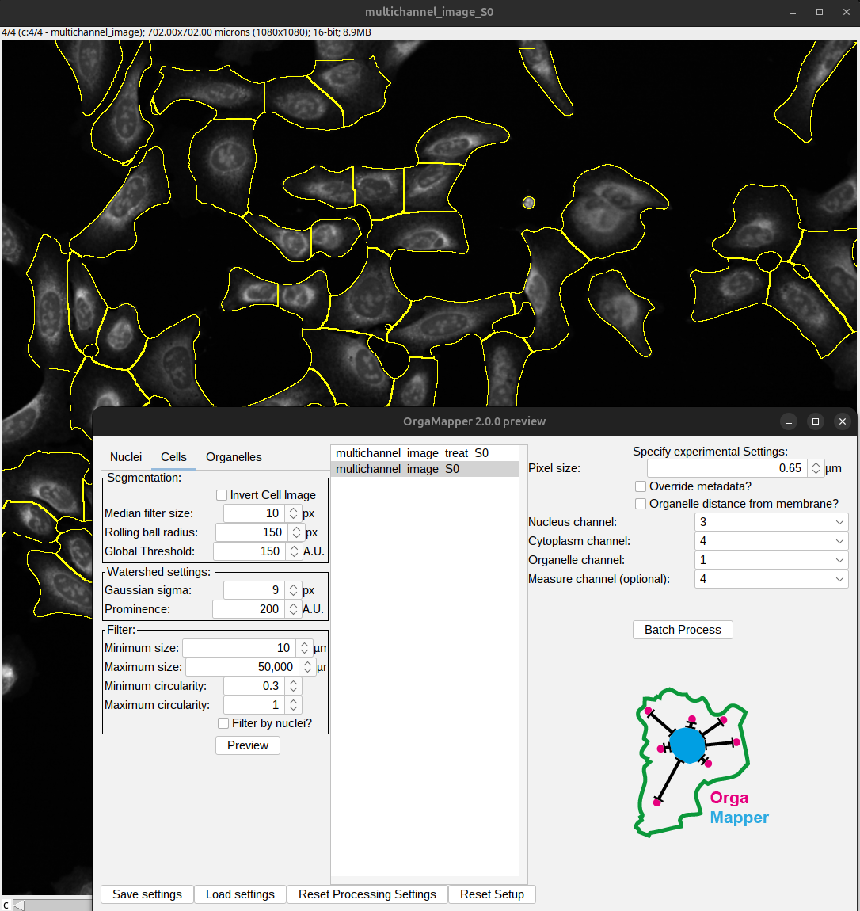
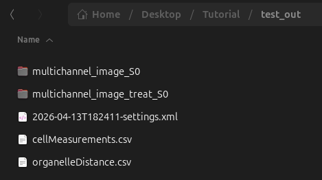
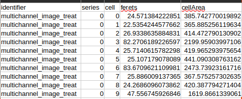
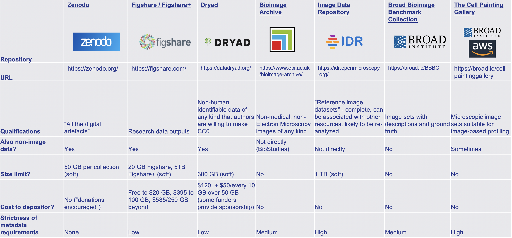

Unit 4: Quantification#
Topics: Image analysis, software versions, code, and example availability
Learning objective#
Learners should be able to perform a basic quantitative image analysis using an existing tool, document the software, tool versions, and analysis settings used, and identify what needs to be shared (code, settings files, example data) so that custom or existing analyses are transparent and reproducible.
Time needed: 10 min
Motivation#
Quantitative results are stronger than qualitative results alone. Additionally, human vision is not quantitative and is subject to visual illusions and biases: Visual Illusions.
To make the applied analysis reproducible, it is critical that the analysis, the tools used, and their settings are all properly documented in the methods. For a custom analysis, the workflow or code itself should be shared so others can reproduce it.
Key considerations#
Is the software tool named and cited?
Are the software versions documented?
Is the workflow with the different processing steps described?
Are critical parameters disclosed?
Introduction#
For our example figure, we could easily imagine that we create a quantitative analysis to count the number of small rounded cells. This could either be based on existing tools or writing our own analysis.


Fig. 88 Nocodazole treatment results in the appearance of small rounded cells in U2-OS cells: (a) U2-OS cells treated with DMSO only. (b) Cropped image of a single cell treated with DMSO. (c) U2-OS cells treated with Nocodazole at a 5 µM concentration over 24 h show appearance of small rounded cells (White Arrowheads). (d) Cropped image of a small rounded cell. Scale bar represents 100 µm (a) and 20 µm (b).#
Download the example images here:
Analysis based on existing workflow#
For our example images, we were able to adopt a published tool, OrgaMapper:
Schmied, C., Ebner, M., Samsó, P. et al. OrgaMapper: a robust and easy-to-use workflow for analyzing organelle positioning. BMC Biol 22, 220 (2024). https://doi.org/10.1186/s12915-024-02015-8
To reproduce the analysis, you will need to get the plugin in Fiji:
Help > Update…


Fig. 89 Update Fiji.#
Press: Manage update site and add 2 update sites:
Select: Cellular Imaging Facility
Select: ImageScience
Press OK and restart Fiji.
Save the example images in an input folder (e.g., test). OrgaMapper documents the analysis settings using an .xml file. Please download the settings: settings .xml (right-click and select “Save Link As…”) and put it into the input folder. Create an output folder (e.g., test_out).
Start OrgaMapper#
Plugins > CellularImaging > Map Organelle
Specify the location of the input folder, output folder, and the settings file. Then press OK to start OrgaMapper.


Fig. 90 Start OrgaMapper.#
Image analysis#
OrgaMapper then performs a simple watershed-based image segmentation and a basic per-cell analysis on both the control and treatment images. For more information about the analysis performed, you can go to the documentation of OrgaMapper.
OrgaMapper visualizes this on the example images using the “Preview” button:


Fig. 91 OrgaMapper preview of the segmentation.#
To execute the analysis, press the “Batch Process” button. OrgaMapper then performs the analysis based on the loaded settings and will save the results in the output folder.


Fig. 92 OrgaMapper Results.#
Image analysis results#
It is critical that we can extract the cell area in the “cellMeasurements.csv” file:


Fig. 93 OrgaMapper cell area results.#
We then applied a simple threshold to ask how many cells in the control and Nocodazole-treated images had an area above or below 1000 µm², yielding the following result:
Treatment |
Cells with area <1000 µm² |
Cells with area >1000 µm² |
Total cells |
% small cells |
|---|---|---|---|---|
DMSO |
0 |
63 |
63 |
0 |
Nocodazole |
23 |
6 |
29 |
79 |
This quantification could now be in the result of your manuscript.
Exercise: Document methods#
Applied scientific methods need to be transparent and reproducible. Thus, it is important to properly document the performed analysis. For this, it is critical to document the used software platform as well as the tools and their versions.
Think about it
What are key parts that you need to document for others to reproduce the analysis?
Imagine yourself years later and you have new data and want to repeat an analysis. What would you need?
Material for creating this documentation:
Fiji, Plugin interface, settings file
Documentation: https://schmiedc.github.io/OrgaMapper/
Publication: Schmied C. et al. BMC Biol (2024). https://doi.org/10.1186/s12915-024-02015-8
Solution: Proposed methods#
We have outlined the critical aspects in the key considerations:
Is the software tool named and cited?
Are the software versions documented?
Is the workflow with the different processing steps described?
Are critical parameters disclosed?
A potential methods section could look like this:
Image analysis was performed using Fiji Is Just ImageJ (Fiji) (Schindelin et al. 2012) version 2.16/1.54p and the OrgaMapper plugin version 3.0.0 (Schmied et al. 2024).
Nuclei were segmented using an intensity-based segmentation with the Li automatic threshold after filtering with a median filter (size 5 pixels) and a rolling-ball background subtraction (radius 10 pixels). After thresholding, an erosion of 1 pixel was applied to the nuclei masks, and the segmented nuclei were filtered by size, keeping those between 1 µm² and 750 µm². The cell area was segmented using a manual intensity threshold of 150 fluorescent intensity (A.U.) after a median filter (size 10 pixels) and a rolling-ball background subtraction (radius 150 pixels). For the watershed-based cell segmentation, cell centers were detected using a summed nuclei and cytoplasm channel: a Laplacian-of-Gaussian filter was applied with a sigma of 2 pixels, and peaks with a prominence of 40 fluorescent intensity (A.U.) were retained. Separated cells were then filtered by keeping cells above 10 µm² with a circularity above 0.3. For each cell, the cell area was further analyzed. Small cells were defined as those with an area below 1000 µm².
References:
Schindelin, J., Arganda-Carreras, I., Frise, E. et al. Fiji: an open-source platform for biological-image analysis. Nat Methods 9, 676–682 (2012). https://doi.org/10.1038/nmeth.2019
Schmied, C., Ebner, M., Samsó, P. et al. OrgaMapper: a robust and easy-to-use workflow for analyzing organelle positioning. BMC Biol 22, 220 (2024). https://doi.org/10.1186/s12915-024-02015-8
Tip
Since OrgaMapper provides a settings file, this settings file can be shared in a data repository.
Analysis based on new workflows#
For this analysis, we could write a custom Fiji macro instead of using an existing plugin. In that case, the code is itself the analysis, so the macro and a small example dataset should be deposited in a data or code repository. Without these, neither reviewers nor future readers can verify or reproduce what was done.
See also: Miura K, Nørrelykke SF. Reproducible image handling and analysis. EMBO J. 2021 https://doi.org/10.15252/embj.2020105889
Code and example availability#


Fig. 94 Examples of different repositories. Overview provided by Cimini 2023.#